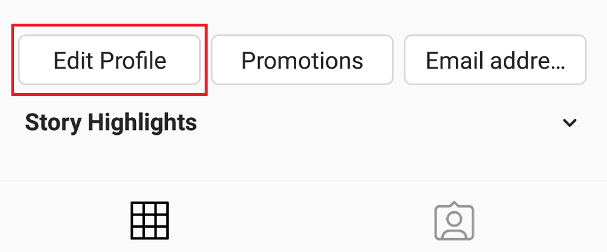
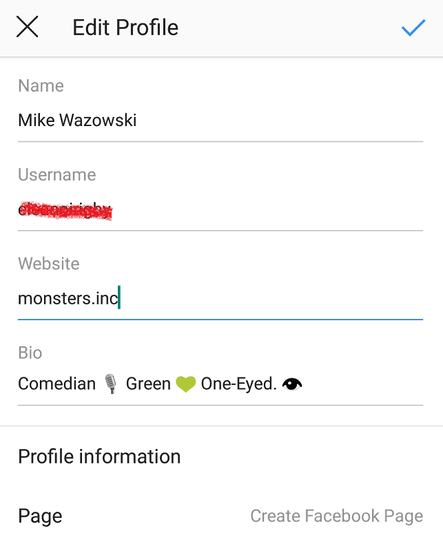
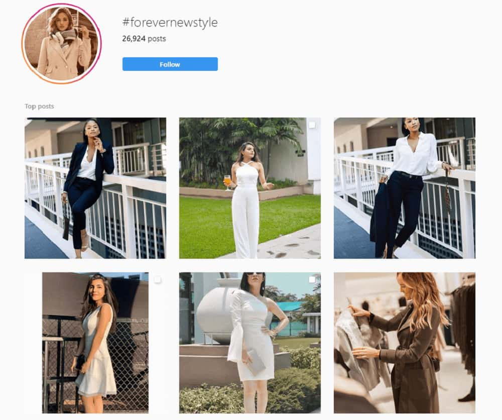

If you’e been on Instagram long enough, you’ve likely encountered the phrase, “link in bio” a few dozen times.
With the ability to cross-promote other social platforms on their profile, the Instagram “link in bio” trend effectively drives greater sales, website traffic, and conversions for its users.
So what is a “link in bio” exactly; and how does one use their Instagram bio to their full advantage?
What is Instagram’s “Link in Bio”?
Instagram’s “link in bio” simply refers to the website URL displayed within one’s profile description.
These often direct the viewer to the user’s official business website, secondary social media page, sale promotions, funding platforms – and various other external online sources.

Courtesy of selfcare_subscriptions (Instagram account).
Since the bio is the first thing visitors see when tapping on a profile, it’s crucial to include your most important social link to drive further reach and traffic.
How To Craft A Good Instagram Bio
If you’re growing a business on Instagram, standing out should be a top priority. With over 200 million users visiting at least one business profile daily, you’ve got to impress potential followers off the bat, and quick.
Instagram bios are like first impressions – they give new viewers a quick overview of who you and your brand are. A good bio is therefore clear on describing the user, what they do, and what they have to offer.
Given that you only have a 150 character limit to optimize, it’s best to keep things clear-cut, yet snappy and memorable. It can also help to have your brand personality shine through, as we discuss further below.
Adding A Link To Your Instagram Bio
Before diving into our methods of optimizing your Instagram bio, let’s run through the easy steps of adding in an external URL.
To add a link to your bio, select the “Edit Profile” button above your feed.

From here, you can easily edit the information in the fields provided. These include your actual bio – where you can add a general description of your business and its services, along with a field for adding your website URL.

This page also allows you to change your username, business category, contact options, and profile picture.
Instagram’s Link In Bio: Tips and Tricks
Now that we’ve run through the basics of creating a quality Instagram bio, here are a few clever ways of using its features to your full advantage.
Tip #1 – Using Keywords
When your potential audience surfs the web (or Instagram app) for brands that pique their interest, it helps to have your primary keywords included in your bio name.
Why? When people search for specific users on the app, the words or phrases they type in yield related profile names in the results.
Of course, it helps to have the actual keyword in your username, but including them in your Instagram name works just as well. For example, searching up the keyword “food” pulls up several accounts with “food” in their username.

However, profiles such as “huttoneats” or “vegolab” appear among these, displaying this specific keyword in their profile name.
Courtesy of foodyeating (Instagram account).
It’s important to know your audience and the information they’re looking for, so you can market your profile as such – as quick and conveniently as possible.
Tip #2 – Mentions and Hashtags
Instagram bios now have the ability to include tags – whether its another user, or a specific hashtag.
For brands who manage additional accounts for side projects or sister businesses, tagging these in your bio is the perfect for cross-promotion. This is also ideal for users who wish to tag the company or business they work for on their personal profile.
For example, the official account for Keeping Up With The Kardashians (@kuwtk) tags their network, E! Entertainment (@eentertainment) in the first line of their bio. This way, E! potentially gets extra traffic from those who visit @kuwtk’s profile.
Courtesy of kuwtk (Instagram account).
Adding hashtags to your bio is also the ideal opportunity for promoting your branded hashtag. Forever New’s Instagram bio, for example, offers nothing more than a single line that reads: “Share your #ForeverNewStyle with us.”

Courtesy of forevernew_official (Instagram account).
Visitors are likely to tap on the hashtag and view the thousands of posts that use this when sharing photos of Forever New’s clothing. Its a way of tying together an exclusive community, and can help you curate user-generated content for the future.

Tip #3 – Adding Call-To-Actions
To effectively encourage interaction from your visitors, you’ve got to include compelling call-to-actions.
This should be a staple for anyone using links in their Instagram bios. Audiences must be enticed or driven to click on your website, social, or promotional link – or they’re otherwise likely to dismiss it altogether.
Writing a good call-to-action statement gives your visitor a clear sense of direction after discovering your profile. This can be as simple as a “Shop here!” – driving audiences to your official store as your feed flaunts engaging photos of your products.

Courtesy of sweetplanetcharms (Instagram account).
Others may opt for more detail, giving viewers a reason to check out their link. In travel blogger Helene Sula’s Instagram, she leaves a link to her official website, with a simple description of what it has to offer visitors.

Courtesy of heleneinbetween (Instagram account).
Tip #4 – Using Story Highlights
Instagram stories have blown up over the years, becoming an incredibly popular marketing strategy for brands to offer followers with exclusive, daily updates. Given their temporary nature, they grant a sense of FOMO that prompts views and engagement – a perk above your standard Instagram post.
Courtesy of hbo (Instagram account).
Most stories are left with a 24-hour lifespan, though some (often the most interesting ones) are saved through Story Highlights.
These are little channels found under your Instagram bio that archive your best and most memorable Instagram stories. Having separate highlights for separate topics helps your viewer navigate through the information they wish to see. Often, profiles used customized icons to differentiate each highlight channel. This is great for establishing your brand theme, colour palette, and aesthetic, as with the case of Oceana.

Courtesy of oceana (Instagram account).
Story Highlights are a fun of way of letting your viewers in on the more personal, day-to-day side of your brand. Companies like Marvel, for example, use highlights as a way of compiling their on-the-go coverage for a specific event, such as San Diego Comic-Con.
Courtesy of marvel (Instagram account).
Tip #5 – Get Creative With Fonts and Emojis
Who said Instagram bios had to look plain and standard? Some users get extra creative with their bio aesthetic, adding customized fonts and spicing it up with cute emojis.

Courtesy of glamourlooklenses (Instagram account).
It’s a simple way of helping your brand stand out visually. Users are likely more drawn to vibrant look of special characters and emojis, inviting them to read the rest of your bio info.
Using special characters also allows you to create bio in a non-English language, helping you market your brand to specific geographical location.

Courtesy of famewink (Instagram account).
Tip #6 – Have Personality
Finally, it’s important to have your unique brand personality shine through your bio. No one wants to follow a bland, boring, account – especially if you’re just starting out. But a profile that appears clever, charismatic, and inviting will likely attract (and keep!) new visitors. Best case scenario, it’ll get them interested in seeing more of you, what you do, and where your brand is headed.
Courtesy of sarablakely (Instagram account).
Sara Blakely of the SPANX underwear brand does just this, by providing a clear, descriptive bio that humorously depicts her persona. Her profile picture and snappy bio combined leave a highly charming impression; which may leave viewers curious to see more.
Best Instagram Bios
We’ve run through the features of a sharp, creative Instagram bio – so which accounts manage to nail just these? Below are just a handful of some of the best Instagram bios you can draw inspiration from.
Netflix
Netflix uses each of the methods discussed above, to create a neat, simple, yet memorable Instagram bio.
Courtesy of netflix (Instagram account).
The company is well-aware of one its currently biggest successes – Stranger Things – and addresses this off the bat in its one line of bio. It then directs the viewer to its side account “@whattowatchonnetflix”, an alternate Netflix profile that focuses on marketing and recommending its other productions.
Courtesy of whattowatchonnetflix (Instagram account).
Fans of the Stranger Things series will easily be drawn to this call-to-action, then prompted to click on the tag.
Beneath its short description, the profile also displays a series of Stories highlights – some of which are dedicated to recent events or takeovers, while others providing its audience with fun, interactive content.

Courtesy of netflix (Instagram account).
Innisfree
Innisfree’s US-based Instagram account also compiles all the necessary ingredients for a clean, informative bio. The brand is quick to mention its competitive edge: natural, jeju cosmetic ingredients.
Courtesy of innisfreeusa (Instagram account).
The profile then mentions its branded hashtag, “#innisfreeUSA”, with a call-to-action encouraging customers to use this in their product “haul” posts. Those who do are incentivized with the chance to get featured on the brand’s account.
Underneath, the bio also sports a varied line of Story highlights. Each of these cover various topics on the company and its affairs, including their makeup products, new store openings, events, and media coverage.

Courtesy of innisfreeusa (Instagram account).
Starbucks
Starbucks gets a little more poetic in their bio line, though its an appealing one nonetheless. This Instagram bio is an example of a brand promoting a specific personality; one that humanizes the business and creates a feeling of authenticity.
Courtesy of starbucks (Instagram account).
The company also ensures they include “coffee” as part of its Instagram name. This helps it rank in the search results of any user looking for this specific keyword.
As with the profiles mentioned above, Starbucks displays a wide array of Story highlights. What makes these stand out are their focus on societal affairs. These include Pride Week, Military Spouse Appreciation Day, and and its promotion of environmentally-friendly practices.

Courtesy of starbucks (Instagram account).
Such topics can effectively connect with those who share the same values, beliefs, and lifestyles.
Lil Miquela
Finally, the infamous Lil Miquela (a completely CGI Instagram model), touts the perfect example of a clean, straightforward, yet detailed bio.
The profile makes a clear statement on who Lil Miquela is: a musician, and activist, and – being the digital enigma she is – a “robot”.
Courtesy of lilmiquela (Instagram account).
The bio is then formatted into key bullet points, each marketing her latest projects and affairs. Among these are mention tags that lead to a separate Instagram for her online store, along with social campaign accounts that she actively supports.
Finally, her bio leaves a link to her latest musical releases. Viewers are directed to a page displaying various social platforms, from which her music is available for streaming.
Upgrade Your Instagram Bio with Bio.fm and LinkinBio
While adding a link to your Instagram bio is undoubtedly useful, many of us may have a wide variety of external URLs we’d like to share. From multiple social platforms to a range of currently-running promotions, these apps can help you market them all – under one single bio link.
LinkinBio
Later’s LinkinBio app is a revolutionary tool for any Instagrammer with a thriving business. The app provides you with a LinkinBio profile; from here, you’re able to create a clickable, interactive replica of your Instagram feed.

Courtesy of linkinbio.
Brands advertising their products or services in standard Instagram posts can thus direct users to a shoppable version of their gallery. Media accounts that cover special events can use their LinkinBio profile to link specific posts to certain news articles or videos.
Courtesy of linkinbio.
The app effectively compiles all the external resources you wish to promote under one bio link. Additionally, these links are promoted in their relevant Instagram posts, displayed in an optimized version of your standard feed.
Bio.fm
Bio.fm works similarly to LinkinBio, with a slightly different functions and display.
Rather than presenting your links through a clickable version of your Instagram feed; Bio.fm arranges them in blocks through a customizable profile.
Courtesy of bio.fm.
Simply import the social content you wish to share. The app displays these links in drag-and-drop blocks, when you can then arrange according to priority.
The app is completely for free, and allows you to import content from platforms such as Facebook, Spotify, Youtube, and Twitter.
Courtesy of bio.fm.
This separate profile will provide you with a unique URL to share in your bio link. Should you have new links or resources to share with Instagram; simply update your Bio.fm profile – rather than manually changing our bio link each time.
Create a Killer Instagram Bio Today!
As mentioned, Instagram bios are like first impressions. The best Instagram bios know how to capture their target audience right away, cleverly providing as much valuable information as possible – in 150 characters or less.
With many turning to Instagram for business, optimizing your bio link can turn casual visitors into active customers (or brand followers). Whether it’s a store, a social profile, or a blog with a mailing list, never neglect that “link in bio”; it’s a simple way of gaining that extra traffic, engagement, and boost in online sales.
You May Also Like: